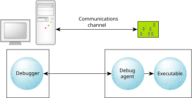

The debugger can run on one platform to debug executables on another:

In a cross-development environment, the host and the target systems must be connected via some form of communications channel.
The two components, the debugger and the debug agent, perform different functions. The debugger is responsible for presenting a user interface and for communicating over some communications channel to the debug agent. The debug agent is responsible for controlling (via the /proc filesystem) the process being debugged.
All debug information and source remains on the host system. This combination of a small target agent and a full-featured host debugger allows for full symbolic debugging, even in the memory-constrained environments of small targets.